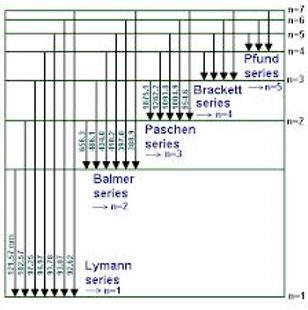

5. Nanophysics - The Atom#
5.1 Discovery of Atomic Spectra#
1800s: Spectroscopic studies revealed distinct emission lines for different gases.
Example: Hydrogen, Helium, Sodium, Potassium.
Figure 5.1 The Hydrogen spectral lines in the visible spectrum.
5.2 The Rydberg Formula#
General formula for hydrogen spectral lines:
\(\frac{1}{\lambda}=R\left(\frac{1}{n_1^2} -\frac{1}{n_2^2}\right)\)
where, \(n_1\) and \(n_2\) are \(>0\), \(n_2>n_1\), and \(R = 1.097776*10^7 \text{m}^{-1}\)
import numpy as np
import matplotlib.pyplot as plt
# Plotting the emission lines using The Rydberg-Ritz formula
def emission_wavelength(n,m):
R=1.097776E7
return (R*(n**-2-m**-2))**-1
fig, ax =plt.subplots(figsize=(12, 1))
for n in range(1,20):
for m in range(n+1,20):
ax.plot([emission_wavelength(n,m),emission_wavelength(n,m)],[0,5])
# Limiting the plot range to the visible
ax.set_xlim(400E-9,700E-9)
ax.set_xlabel('$\lambda$ /nm')
plt.title('Compute the hydrogen emission lines')
plt.show()
5.3 Classical View of the Atom#
Coulomb’s Law governs attraction between electrons and nucleus.
Circular motion of electrons leads to centripetal force.
Figure 5.2 The Classical model of the atom with the forces added.
Coulomb’s law is the starting point with the nuclear charge \(Ze\) and charge of the electron \(e\).
\(F=\frac{kZe^2}{r^2}\) ….. eq 1
This force is equal the centripetal force
\(F=\frac{mv^2}{r}\) ….. eq 2
where \(v\) is the speed of the electron, \(m\) is the mass, and \(r\) is the distance from the centre of the atom. Equating 1 and 2 and simplifying gives,
\( mv^2=\frac{kZe^2}{r} \) ….. eq 3
Note that by multipling by \(\frac{1}{2}\) we arrive at an expression for the kinetic energy (K).
\(\frac{1}{2}mv^2=\frac{kZe^2}{2r}\) ….. eq 4
5.4 Energy of the Electron#
Potential Energy (PE) :Work done moving the electron to distance r .
\(U=\frac{-kZe^2}{r}\) ….. eq 5
Kinetic Energy (KE): Motion of electron around nucleus. Remember from Eq. 4 we have:
\(K=\frac{1}{2}mv^2=\frac{kZe^2}{2r}\) ….. eq 6
Total Energy (E):
\(E=U+K\) ….. eq 7
Sub in Eq. 5 and Eq. 6 into 7 to get the total energy, E
\(E=-\frac{1}{2}\frac{kZe^2}{r}\) ….. eq 8
Classical mechanics predicts electron should spiral into nucleus, which does not happen.
This problem led to the development of quantum mechanics.
5.5 The Bohr Model and Quantum Mechanics#
5.5.1 Introduction to the Bohr Model#
The Bohr model was developed as an improvement over classical physics to explain atomic structure, particularly the hydrogen atom.
It successfully explained the discrete spectral lines of hydrogen.
Bohr was awarded the Nobel Prize in 1922 for this work.
5.5.2 The Bohr Postulates#
5.5.2.1 First Postulate: Stationary States#
Electrons in an atom can only occupy certain stable, non-radiating circular orbits known as stationary states.
These orbits are quantized, meaning electrons cannot exist in between these orbits.
Fig 5.3. Stationary orbits of the Bohr model rather like planetary orbits around a sun.
5.5.2.2 Second Postulate: Energy and Radiation**#
The frequency of radiation emitted or absorbed by an electron is related to the energy difference between two stationary states:
\(E_f - E_i = h\nu \)
where:
\(E_f\) and \(E_i\) are the final and initial energy levels.
\(h\) is Planck’s constant.
\(\nu\) is the frequency of the emitted radiation.
Fig 5.4 Emission is a results of an electron moving from a higher energy orbit to a lower energy orbit.
5.5.2.3 Third Postulate: Quantized Angular Momentum#
The allowed electron orbits are determined by the condition that the electron’s angular momentum is quantised:
\(mvr = n \hbar \)
where:
\(m\) is the electron’s mass.
\(v\) is the velocity of the electron.
\(r\) is the radius of the orbit.
\(n\) is a positive integer \( n = 1, 2, 3, ... \)
\(\hbar = \frac{h}{2\pi}\) is the reduced Planck’s constant.
This explains why only certain orbits are allowed and why electrons do not spiral into the nucleus.
5.5.3 The Bohr Radius#
The radius of the lowest energy orbit \( n=1 \) is known as the Bohr radius:
\(a_0 = \frac{4\pi\epsilon_0\hbar^2}{m e^2} \)
For hydrogen Z=1 , the Bohr radius is:
\(a_0 = 0.0529 \text{nm}\)
This result was derived using classical mechanics and electrostatic force principles.
5.5.4 Energy Levels in the Bohr Model#
The quantised energy levels for hydrogen are given by:
\(E_n = -\frac{E_0Z^2}{n^2} \)
Key values:
\(E_0 = 13.6 \text{eV}\)
Ground state n=1: \(E_1 = -E_0 \) eV
Excited states: \(E_2 = -3.4\) eV etc.
Ionization limit n = ∞: \(E = 0\) eV
The energy difference between levels determines the wavelength of emitted light:
\(\lambda = \frac{1240 \text{ eV⋅nm}}{E} \)
This successfully explained the Rydberg formula for hydrogen’s spectral lines.
Fig 5.5 A sketch of the energy levels of a hydrogen atom based on the Bohr model.
5.6 The Bohr Model and Spectral Series#
The Bohr model explains the emission spectra of hydrogen:
Lyman series: Transitions to \( n=1 \) (UV region)
Balmer series: Transitions to \( n=2 \) (Visible region)
Paschen series: Transitions to \( n=3 \) (Infrared region)
 Fig. 5.6 The hydrogen spectral series lines.
Example Calculation:
Wavelength of light emitted when an electron moves from n=4 to n=2:
where c is the speed on light in eV.nm units hc=1240
rearrange to find \(\lambda\)
Corresponding to a visible (blue) light transition in the Balmer series.
5.7 Limitations of the Bohr Model#
While the Bohr model was a significant advancement, it had several limitations:
No justification for stationary orbits or quantized angular momentum.
Failed to accurately predict spectra for atoms other than hydrogen.
Could not explain fine structure (small spectral line splitting).
The Bohr model was a major step toward understanding atomic structure.
It successfully explained hydrogen’s spectral lines but failed for more complex atoms.